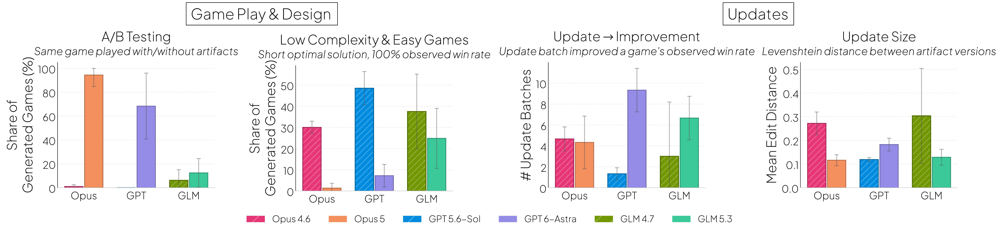
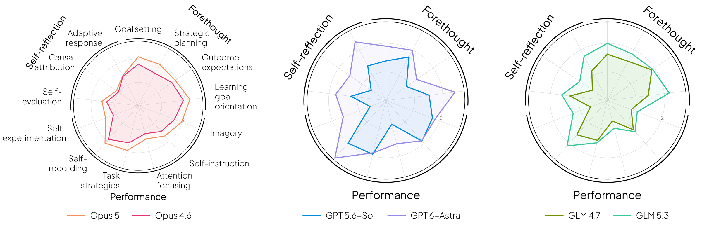
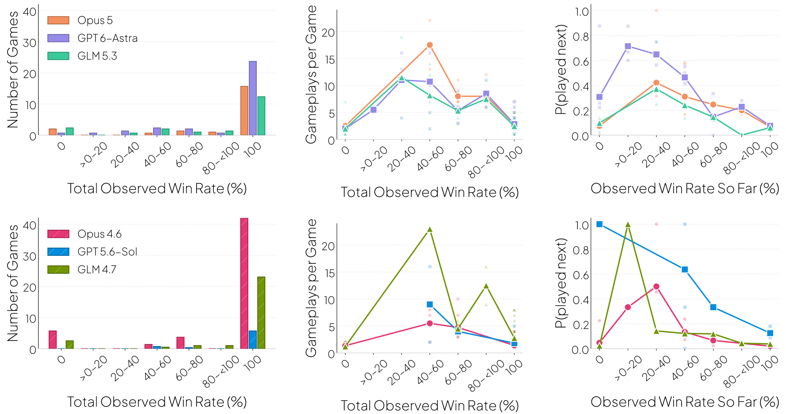
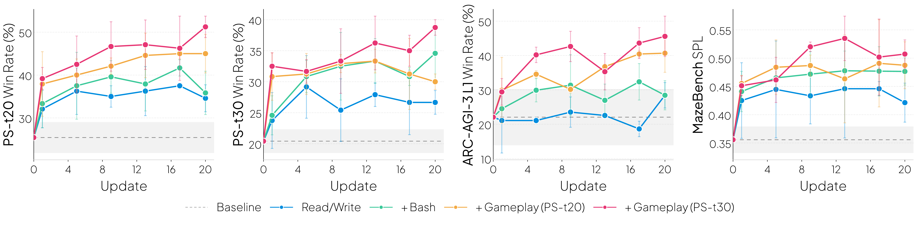
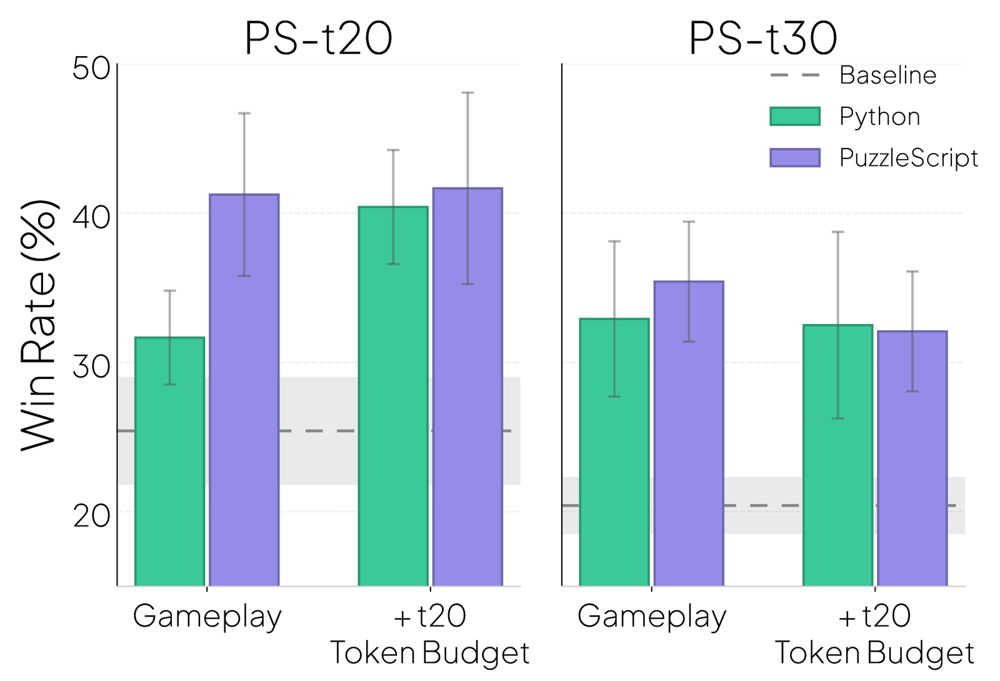
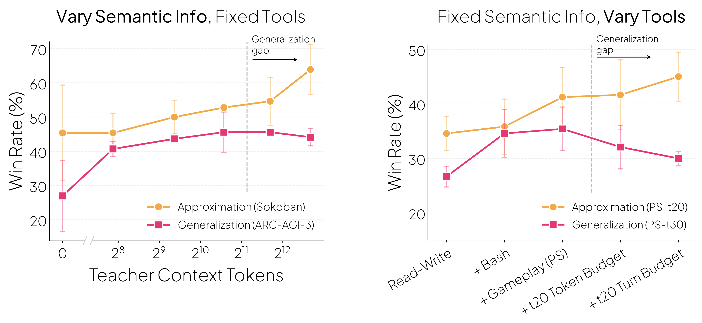

What happens when we give agents a computer and tell them to self-improve?
A Controlled Self-Improvement Setting
Gameplay with Limited Information
Teacher and Player
Formal Setup
Let \(\pi\) be an LLM with frozen weights \(\theta\). The player \(\pi_{player}\) has context \(c = (c_P, c_L)\), where \(c_P\) is the player prompt and \(c_L\) is auxiliary text files (e.g., skill files). The teacher \(\pi_{teacher}\) is another instance of the same LLM that modifies \(c\). An update is a single edit tool-call to one file in \(c\).
The teacher's "algorithm" is just to act in its sandbox until the budget runs out:
We evaluate a context \(c\) by the player's performance on a held-out test set of games, where each game is played in a fresh player session at a fixed horizon and token budget:
and measure self-improvement as \(J(c_{final}) - J(c_0) > 0\).
Findings
1. Recent models self-improve
2. Self-improving agents follow recognizable learning strategies



3. Self-learned text generalizes


